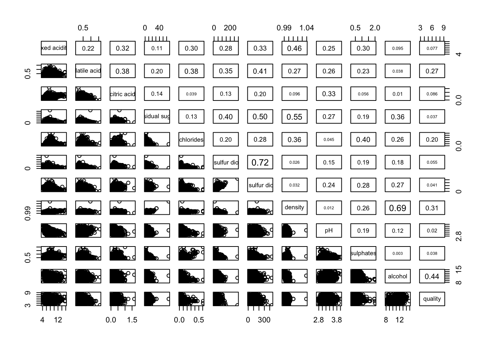
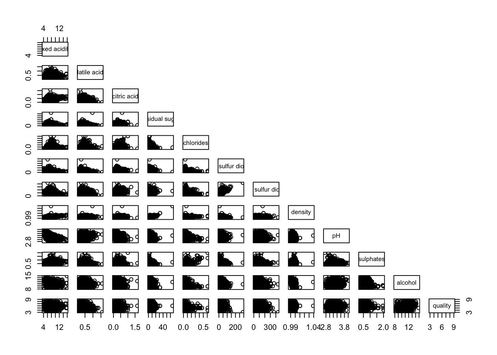

pacman::p_load(corrplot, ggstatsplot, tidyverse, ggplot2)Multivariate Data Analysis
1. Learning Objectives
To understand complex and multivariate data, each visualization offers a unique way to represent and understand patterns, relationships, and distributions within data that contain more than two variables. They translate numerical data into visual formats, making it easier to detect trends, clusters, outliers, and correlations that might be difficult to discern from raw data alone.
Correlation Matrix
Correlogram: Strength and direction of pairwise relationships
Create correlation matrix using
pairs()of R GraphicsPlot corrgram using
corrplotpackage of RCreate an interactive correlation matrix using
PlotlyR
Multivariate Data Visualization
Ternary plot: Three-dimensional analysis
- Build static ternary plots using
ggtern()function ofggternpackage and interactive ternary plots usingplot-ly()function ofPlotlypackage.
- Build static ternary plots using
Glyphs or Star Plot
Heatmap: Structure within complex datasets
- Plot static and interactive heatmaps using
heatmaplypackage
- Plot static and interactive heatmaps using
Parallel coordinate plot
- Plot statistic parallel coordinates plots by using
ggparcoord()ofGGallypackage and interactive parallel coordinates plots by usingparcoordspackage andparallelPlotpackage.
- Plot statistic parallel coordinates plots by using
Parallel plot
Space-constrained visualization of hierarchies
Treemaps: Hierarchical structures
Manipulate data into a treemap structure using
dplyrpackagePlot static treemap using
treemappackage and design interactive treemap usingd3treeRpackage
Sunburst diagram
ggtern is a package that extends the functionality of ggplot2, giving the capability to plot ternary diagrams for (subset of) the ggplot2 proto geometries. Ternary diagrams are used frequently in a number of disciplines to graph compositional features for mixtures of three different elements or compounds. It is possible to represent a coordinate system having three (3) degrees of freedom, in 2D space, since the third dimention is linear and depends only on the other two.
2. Correlation Matrix
A correlogram is a visual representation of the correlation matrix, which displays the correlation coefficients between a set of variables to assess the strength and direction of the pairwise linear relationships between two variables.
Correlation coefficient measures the type and strength of the relationship between two variables and ranges between -1.0 and 1.0.
Perfect linear relationship between the two variables = 1
Perfect inverse relationship between the two variables = -1
No linear relationship between the two variables = 0
There are three broad reasons for computing a correlation matrix.
Reveal the pairwise relationship between high-dimensional variables
Input into other analyses to exclude missing values by pairwise relationship
Function as model diagnostic to assess multicolinearity
2.1 Load Packages
The following R packages will be used:
tidyversesupports data science, analysis and communication taskcorrplotenables multivariate data visualisation and analysisggstatsplotis an ggplot2 extension for creating graphics with details from statistical tests
2.2 Import Data
wine is a wine quality dataset with attributes tested in wine chemistry and are used to determine the quality of wine through sensory and chemical analysis.
wine <- read_csv("data/wine_quality.csv")
glimpse(wine)Rows: 6,497
Columns: 13
$ `fixed acidity` <dbl> 7.4, 7.8, 7.8, 11.2, 7.4, 7.4, 7.9, 7.3, 7.8, 7…
$ `volatile acidity` <dbl> 0.700, 0.880, 0.760, 0.280, 0.700, 0.660, 0.600…
$ `citric acid` <dbl> 0.00, 0.00, 0.04, 0.56, 0.00, 0.00, 0.06, 0.00,…
$ `residual sugar` <dbl> 1.9, 2.6, 2.3, 1.9, 1.9, 1.8, 1.6, 1.2, 2.0, 6.…
$ chlorides <dbl> 0.076, 0.098, 0.092, 0.075, 0.076, 0.075, 0.069…
$ `free sulfur dioxide` <dbl> 11, 25, 15, 17, 11, 13, 15, 15, 9, 17, 15, 17, …
$ `total sulfur dioxide` <dbl> 34, 67, 54, 60, 34, 40, 59, 21, 18, 102, 65, 10…
$ density <dbl> 0.9978, 0.9968, 0.9970, 0.9980, 0.9978, 0.9978,…
$ pH <dbl> 3.51, 3.20, 3.26, 3.16, 3.51, 3.51, 3.30, 3.39,…
$ sulphates <dbl> 0.56, 0.68, 0.65, 0.58, 0.56, 0.56, 0.46, 0.47,…
$ alcohol <dbl> 9.4, 9.8, 9.8, 9.8, 9.4, 9.4, 9.4, 10.0, 9.5, 1…
$ quality <dbl> 5, 5, 5, 6, 5, 5, 5, 7, 7, 5, 5, 5, 5, 5, 5, 5,…
$ type <chr> "red", "red", "red", "red", "red", "red", "red"…
Contextual Knowledge on Wine
Attributes of Wine Quality:
Fixed Acidity: This refers to the concentration of tartaric, malic, and other acids that do not evaporate readily. Higher levels can make a wine taste tart or sour.
Volatile Acidity: This measures the acidic compounds in wine that can vaporize easily. At low levels, they can add to the complexity of the wine, but high levels can lead to an unpleasant, vinegar-like aroma.
Citric Acid: As one of the acids found naturally in grapes, it’s less common in wines but can be added for flavor and freshness.
Residual Sugar: The amount of sugar remaining after fermentation stops. It affects the sweetness of the wine; dry wines have low residual sugar, while sweet wines have high levels.
Chlorides: The amount of salt in the wine, which can influence flavor.
Free Sulfur Dioxide (SO2): This acts as a preservative by preventing microbial growth and oxidation. It can also affect the smell and taste of the wine.
Total Sulfur Dioxide: The sum of bound and free sulfur dioxide. High levels can lead to off-putting aromas and can affect those sensitive to sulfites.
Density: This can give an indication of the alcohol content and sweetness of the wine. Denser wines might have higher sugar content and potentially higher alcohol levels.
pH: The level of acidity in the wine. Wines with lower pH (more acidic) tend to have a longer shelf life and more tartness.
Sulphates: These are added to wine to preserve it and can influence its fermentation and flavor.
Alcohol: The alcohol level can affect the body, flavor, and texture of the wine.
Quality: This is often a score given by experts based on the balance of the wine’s characteristics.
Type: Refers to the classification of the wine (e.g., red, white, rosé) and can be used to correlate specific attributes with the preferred profiles of each type.
2.3 Plot Correlation matrix
Correlation matrix can be created using the following packages:
R Graphics
pair() from R Graphics produce a matrix of scatterplots given x as the numeric columns of a matrix.
Among the 13 attributes in wine, the type attribute is a categorical variable to be excluded from the matrix.
Correlation Coefficient
panel.cor function can show the correlation coefficient of each pair of variables.
panel.cor <- function(x, y, digits = 2, prefix = "", cex.cor, ...) {
usr <- par("usr")
on.exit(par(usr))
par(usr = c(0, 1, 0, 1))
r <- abs(cor(x, y, use = "complete.obs"))
txt <- format(c(r, 0.123456789), digits = digits)[1]
txt <- paste(prefix, txt, sep="")
if(missing(cex.cor)) cex.cor <- 0.8/strwidth(txt)
text(0.5, 0.5, txt, cex = cex.cor * (1 + r) / 2)
}
pairs(wine[,1:12],
upper.panel = panel.cor)
Double Panel
pairs(wine[,1:12])Panel Selection
A correlation matrix is symmetric. lower.panel and upper.panel are panel functions used below and above the diagonal respectively.
pairs(wine[,1:12], upper.panel = NULL)
Ggstatplot Package
ggcormat() of ggstatplot package creates a corrgram where cor.var produce a correlation coefficient matrix and the associated p-value matrix
ggcorrmat(
data = wine,
cor.vars = 1:12,
ggcorrplot.args = list(outline.color = "black",
hc.order = TRUE,
tl.cex = 10),
title = "Correlogram for wine dataset",
subtitle = "Four pairs are no significant at p < 0.05"
)Customization
ggcorrmat(
data = wine, ## data from which variable is to be taken
cor.vars = 1:12,
type = "np", ## which correlation coefficient is to be computed
lab.col = "red", ## label color
ggtheme = theme_light(), ## selected ggplot2 theme
## turn off default ggestatsplot theme overlay
matrix.type = "lower", ## correlation matrix structure
colors = NULL, ## turning off manual specification of colors
palette = "category10_d3", ## choosing a color palette
package = "ggsci", ## package to which color palette belongs
title = "Gapminder correlation matrix", ## custom title
subtitle = "Source: Gapminder Foundation" ## custom subtitle
)Multiple Plots
ggstatsplot provides a special helper function to do separate analysis using grouped_ggcorrmat(). It applies ggcorrmat() across all levels of a specified grouping variable and then combines list of individual plots into a single plot.
grouped_ggcorrmat(
data = wine,
cor.vars = 1:11,
grouping.var = type,
type = "robust",
p.adjust.method = "holm",
plotgrid.args = list(ncol = 2),
ggcorrplot.args = list(outline.color = "black",
hc.order = TRUE,
tl.cex = 10),
annotation.args = list(
tag_levels = "a",
title = "Correlogram for wine dataset",
subtitle = "The measures are: alcohol, sulphates, fixed acidity, citric acid, chlorides, residual sugar, density, free sulfur dioxide and volatile acidity",
caption = "Dataset: UCI Machine Learning Repository"
)
)
Corrplot Package
cor() of R Stats is used to compute the correlation matrix of wine data frame.
wine.cor <- cor(wine[, 1:12])corrplot.mixed(wine.cor,
lower = "ellipse",
upper = "number",
tl.pos = "lt",
diag = "l",
tl.col = "black")Ellipse Package
The ellipse package allows us to build a correlogram using plotcorr() function.
First of all, you have to compute the correlation matrix of your dataset using the cor() function of R. Each correliation will be represented as an ellipse by the plotcorr() function. Color, shape and orientation depend on the correlation value.
# Libraries
library(ellipse)
library(RColorBrewer)
# Use of the mtcars data proposed by R
wine.cor <- cor(wine[, 1:12])
# Build a Pannel of 100 colors with Rcolor Brewer
my_colors <- brewer.pal(5, "Spectral")
my_colors <- colorRampPalette(my_colors)(100)
# Order the correlation matrix
ord <- order(wine.cor[1, ])
wine_ord <- wine.cor[ord, ord]
plotcorr(wine_ord , col=my_colors[wine_ord*50+50] , mar=c(1,1,1,1) )Corrgram Package
Using corrgram(), there are two ways to graphically display the correlation matrix using the panel.shade() and panel.pie() functions.
library(corrgram)
corrgram(wine[, 1:12], order=TRUE,
main="Wine",
lower.panel = panel.shade, upper.panel = panel.pie,
diag.panel = panel.minmax, text.panel = panel.txt)3. Ternary Plot
A ternary plot, also known as a ternary graph, triangle plot, simplex plot, or de Finetti diagram, is a barycentric plot on three variables which sum to a constant. It graphically depicts the ratios of the three variables as points in an equilateral triangle. It is used when the sum of the three variables is fixed, typically at 100 percent, making it useful for representing compositional data where the components of a whole must add up to a constant value.
3.1 Load Packages
The following R packages will be used:
tidyversesupports data science, analysis and communication taskplotlyggternplots static ternary plots.Ternarycreates of ternary plots in the R graphics
pacman::p_load(tidyverse, plotly, ggtern, Ternary)3.2 Import and Prepare Data
pop is a population dataset of Singapore residents with attributes on planning area subzone, age group, sex and type of dwelling collected between June 2000-2018.
pop <- read_csv("data/respopagsex2000to2018_tidy.csv")
glimpse(pop)Rows: 108,126
Columns: 5
$ PA <chr> "Ang Mo Kio", "Ang Mo Kio", "Ang Mo Kio", "Ang Mo Kio", "An…
$ SZ <chr> "Ang Mo Kio Town Centre", "Ang Mo Kio Town Centre", "Ang Mo…
$ AG <chr> "AGE0-4", "AGE0-4", "AGE0-4", "AGE0-4", "AGE0-4", "AGE0-4",…
$ Year <dbl> 2011, 2012, 2013, 2014, 2015, 2016, 2017, 2018, 2011, 2012,…
$ Population <dbl> 290, 270, 260, 250, 260, 250, 200, 180, 290, 290, 270, 300,…We derive three new measures, namely young, active, and old, using mutate() of dplyr package.
pop3 <- pop %>%
mutate(`Year` = as.character(Year))%>%
spread(AG, Population) %>%
mutate(YOUNG = rowSums(.[4:8]))%>%
mutate(ACTIVE = rowSums(.[9:16])) %>%
mutate(OLD = rowSums(.[17:21])) %>%
mutate(TOTAL = rowSums(.[22:24])) %>%
filter(Year == 2018)%>%
filter(TOTAL > 0)
glimpse(pop)Rows: 108,126
Columns: 5
$ PA <chr> "Ang Mo Kio", "Ang Mo Kio", "Ang Mo Kio", "Ang Mo Kio", "An…
$ SZ <chr> "Ang Mo Kio Town Centre", "Ang Mo Kio Town Centre", "Ang Mo…
$ AG <chr> "AGE0-4", "AGE0-4", "AGE0-4", "AGE0-4", "AGE0-4", "AGE0-4",…
$ Year <dbl> 2011, 2012, 2013, 2014, 2015, 2016, 2017, 2018, 2011, 2012,…
$ Population <dbl> 290, 270, 260, 250, 260, 250, 200, 180, 290, 290, 270, 300,…3.3 Plot ternary plot
ggtern() function of ggtern package to create a simple ternary plot.
# Building the static ternary plot
ggtern(data = pop3, aes(x = YOUNG,y = ACTIVE, z = OLD)) +
geom_point() +
labs(title="Population structure, 2015") +
theme_rgbw()
plot_ly() function of Plotly R creates an interactive ternary plot.
# reusable function for creating annotation object
label <- function(txt) {
list(
text = txt,
x = 0.1, y = 1,
ax = 0, ay = 0,
xref = "paper", yref = "paper",
align = "center",
font = list(family = "serif", size = 15, color = "white"),
bgcolor = "#b3b3b3", bordercolor = "black", borderwidth = 2
)
}
# reusable function for axis formatting
axis <- function(txt) {
list(
title = txt, tickformat = ".0%", tickfont = list(size = 10)
)
}
ternaryAxes <- list(
aaxis = axis("Young"),
baxis = axis("Active"),
caxis = axis("Old")
)
# Initiating a plotly visualization
plot_ly(
pop3,
a = ~YOUNG,
b = ~ACTIVE,
c = ~OLD,
color = I("black"),
type = "scatterternary"
) %>%
layout(
annotations = label("Ternary Markers"),
ternary = ternaryAxes
)# Configure plotting area
par(mar = rep(0.3, 4))
# Example data object
dat <- data.frame(sio2 = c(2, 4, 10, 20),
fe2o3 = c(5, 6, 7, 8),
al2o3 = c(12, 11, 10, 9),
grain_size = c(20, 16, 12, 8),
reflectance = c(80, 63, 51, 20))
# Define a colour spectrum
spectrumBins <- 255 # Number of bins to use
mySpectrum <- viridisLite::viridis(spectrumBins)
# Cut our reflectance data into categories
binnedReflectance <- cut(dat$reflectance, spectrumBins)
# Assign each data point a colour from the spectrum
pointCol <- mySpectrum[binnedReflectance]
# Define a size range
maxSize <- 2.4 # Size of largest point, in plotting units
sizes <- dat$grain_size
pointSize <- sizes * maxSize / max(sizes)
# Initialize the plot
TernaryPlot(atip = expression(SiO[2]),
btip = expression(paste(Fe[2], O[3], " (wt%)")),
ctip = expression(paste(Al[2], O[3]))
)
# Plot the points
TernaryPoints(dat[, c("sio2", "fe2o3", "al2o3")],
cex = pointSize, # Point size
col = pointCol, # Point colour
pch = 16 # Plotting symbol (16 = filled circle)
)
# Legend for colour scale
PlotTools::SpectrumLegend(
"topleft",
cex = 0.8, # Font size
palette = mySpectrum,
legend = paste(
seq(from = max(dat$reflectance), to = min(dat$reflectance),
length.out = 5),
"%"
),
bty = "n", # No framing box
xpd = NA, # Don't clip at margins
# title.font = 2, # Bold. Supported from R 3.6 onwards
title = "Reflectance"
)
# Legend for point size
PlotTools::SizeLegend(
"topright",
width = c(0, maxSize),
lend = "round", # Round end of scale bar
legend = paste(
signif(seq(max(sizes), 0, length.out = 5), digits = 3),
"\u03bcm" # µm
),
title = "Grain size",
# title.font = 2, # Bold. Supported from R 3.6 onwards
bty = "n", # Do not frame with box
cex = 0.8
)4. Heatmap
A heatmap is a data visualization technique that shows magnitude of a phenomenon as color in two dimensions. The variation in color may be by hue or intensity, giving visual cues to the reader about how the phenomenon is clustered or varies over space.
4.1 Load Packages
The following R packages will be used:
tidyversesupports data science, analysis and communication taskseriationdendextendheatmaply
pacman::p_load(seriation, dendextend, heatmaply, tidyverse)4.2 Import and Prepare Data
happiness is a world happines report from 2018.
happiness <- read_csv("data/WHData-2018.csv")
glimpse(happiness)Rows: 156
Columns: 12
$ Country <chr> "Albania", "Bosnia and Herzegovina", "B…
$ Region <chr> "Central and Eastern Europe", "Central …
$ `Happiness score` <dbl> 4.586, 5.129, 4.933, 5.321, 6.711, 5.73…
$ `Whisker-high` <dbl> 4.695, 5.224, 5.022, 5.398, 6.783, 5.81…
$ `Whisker-low` <dbl> 4.477, 5.035, 4.844, 5.244, 6.639, 5.66…
$ Dystopia <dbl> 1.462, 1.883, 1.219, 1.769, 2.494, 1.45…
$ `GDP per capita` <dbl> 0.916, 0.915, 1.054, 1.115, 1.233, 1.20…
$ `Social support` <dbl> 0.817, 1.078, 1.515, 1.161, 1.489, 1.53…
$ `Healthy life expectancy` <dbl> 0.790, 0.758, 0.712, 0.737, 0.854, 0.73…
$ `Freedom to make life choices` <dbl> 0.419, 0.280, 0.359, 0.380, 0.543, 0.55…
$ Generosity <dbl> 0.149, 0.216, 0.064, 0.120, 0.064, 0.08…
$ `Perceptions of corruption` <dbl> 0.032, 0.000, 0.009, 0.039, 0.034, 0.17…change the rows by country name instead of row number
row.names(happiness) <- happiness$Countryhappiness1 <- dplyr::select(happiness, c(3, 7:12))
happiness_matrix <- data.matrix(happiness)4.3 Plot Heatmap
happiness_heatmap <- heatmap(happiness_matrix, Rowv = NA, Colv = NA)
6. Reference
ggtern http://www.ggtern.com/d/2.2.0/
ggtern github https://github.com/cran/ggtern
ellipse: https://r-graph-gallery.com/97-correlation-ellipses.html#:~:text=The%20ellipse%20package%20allows%20to,by%20the%20plotcorr()%20function.
corrgram: https://cran.r-project.org/web/packages/corrgram/vignettes/corrgram_examples.html